Please note: this article is part of the older "Objective-C era" on Cocoa with Love. I don't keep these articles up-to-date; please be wary of broken code or potentially out-of-date information. Read "A new era for Cocoa with Love" for more.
Creating iPhone and Mac icons using Inkscape (Part 1 of 2)
In this two part series, I'll give a beginner's guide to creating iPhone and Mac application icons using Inkscape — a free, vector illustration program. In this first part, I'll talk about the common styles and traits of icons on the Mac and iPhone and give a step-by-step guide to creating the first iPhone icon in Inkscape.
Introduction
This series will cover the creation of the following different icons:
Only the first icon will be created in this part. The remaining four will be covered in the second part.
It may seem strange to be covering icon creation in a Cocoa programming blog but the icon is an important part of an application and Cocoa is primarily an application programming environment. While larger development teams have dedicated graphic artists to create icons and other artwork assets, the reality is that on smaller teams or on solo projects, a programmer may need to create icons themselves.
The goal of this series is to show non-graphics professionals how to create graphics of an acceptable level for their applications that follow the established visual trends for iPhone and Mac apps.
A vector approach
This post is partly a response to Elite By Design's "Design The iTunes Icon For The iPhone And iPod Touch" which produced an iTunes-style icon at 125x125 pixels in Photoshop.
I wanted to show an alternative approach to the one suggested in that article. This alternative approach has the following advantages:
- Entirely vector artwork, so it will scale from 57x57 pixels up to 512x512 pixels as required for App Store submissions.
- Rounded corners and gloss are applied to a separate clone of the base artwork so the submission to Apple can be non-prerendered if you choose.
- Created using free software as non-professional artists don't always have access to Photoshop.
In addition to detailing iPhone icon creation, the second part will also cover basic Mac icon design.
Established styles
I continue to be surprised when I look at screenshots of the Windows 7 taskbar.
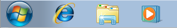These are the first four icons that a Windows 7 user sees and they are the strangest collection of graphics I've ever seen. They share no obvious visual style; they are all drawn with different perspective, they all have different weights, some are glossy while others are matte, some have line edges while others are self-edged (no lines) and they don't share a color palette.
Icon styles on the Mac
By contrast, icons on the Mac tend to have more in common:
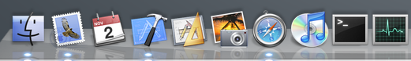Ignoring the "Finder" icon (which is actually the "Mac OS" icon and predates Mac OS X by about 5 years), these icons come in three distinct styles:
- Document applications (rectangular background angled 5-10° left).
- Appliance applications (round — or at least non-rectangular — background).
- Utilities (orthogonal rectangular background).
Originally, Apple had the guideline that utilities should look like they were "items sitting on a shelf" but only the disk utitilies still follow that guideline.
In addition to these three categories, the icons tend to:
- Have approximately the same weight (fill roughly the same amount of their visual area).
- Use soft gradients, sometimes (but not always) with a light gloss or highlight.
- Use a generally bright but slightly desaturated palette of grays, azure blues, desaturated reds and sandy yellows (utility apps tend to use more blacks and darker colors).
- Indicate their function or concept with an overlayed or nested element.
- Are self-edged and have almost no internal lines (the outline of the icon is sometimes edged for contrast)
Of course, none of these are immutable but following them will make it easier to create a simple icon that looks like it belongs on the Mac.
Icon styles on the iPhone
The iPhone has a style that is distinct from the Mac:
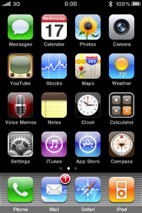Aside from the obvious round cornered background and top-down gloss effect, iPhone icons tend to use:
- Strongly saturated colors
- A bright gradient or colorburst in the background
- White silhouetted representative elements over the background
There is certainly variation and some icons that follow their own rules entirely (the "Notes" and "App Store" icons have little in common other than the rounded corners) but the easiest path to creating an icon that looks like it belongs on the iPhone is to incorporate these elements.
Inkscape
The tool that I will use to create the icons is Inkscape. Inkscape is a GPL-licensed SVG-based vector illustration program that you can download from inkscape.org. It is available in a Universal binary for Mac OS X 10.3.9 and newer.
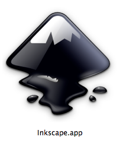A nice multi-purpose icon but clearly not designed with "standard Mac app" as its primary goal.
You will need X11 installed and pre-Snow Leopard users will need an updated version of X11 (download new versions from here: http://xquartz.macosforge.org/).
Yes, Inkscape is an X11 program, which means that Open/Save dialogs are non-standard, windows may not come to the front when you expect them too and keyboard shortcuts are all Control-X instead of Command-X. Despite this, Inkscape is generally a good program — certainly far better than most X11 applications on the Mac.
If you prefer a different illustration program, most of the techniques in this guide will apply. The Filter Effects and the Path Effects are probably the points that will be most different but I'm sure you can find alternatives.
Page area
Let's start with a blank document in Inkscape.
A new document will appear when you start Inkscape or you can create a new document from the "File"→"New"→"Default" menu.
Go to the "File"→"Document Properties". Set the Default Units to "px" and the custom document size to 57 by 57.
The reason why we set the units and use the actual pixel sizes in a vector program is this will let us align points to whole value boundaries and avoid unnecessary anti-aliasing. For example, drawing a shape with its edge at Y=0.5 will cause the actual shape border to anti-alias across two different pixels when we render at 57x57 pixels but if we set the shape border's Y coordinates to 1.0, it won't have this problem.
The page area will now look tiny in the window. You can zoom in using the middle mouse button (click and drag with the middle mouse button to pan) or the "+" key. Alternately, you can zoom the document area to fill the window by pressing the "5" key.
Zooming: you will need to be comfortable with zooming in the program. The "+" and "-" keys will zoom in and out at any time. The 3 key will zoom to the selection and 4 will show all drawn elements. Clicking and dragging the middle mouse button will pan the document, clicking the middle mouse button will zoom and shift-middle mouse will zoom out.
Creating the glossy round rectangle
The Tool Area is the column of buttons down the left side of the window. The 5th tool from the top is the rectangle tool.
Red round rectangle
Using the rectangle tool, drag out a rectangle to fill the document area.
Open the Fill and Stroke palette (menu item "Object"→"Fill and Stroke" or Control-Shift-F). With the rectangle we created selected in the window, select the Stroke tab of the Fill and Stroke Palette. Make certain there is no stroke (the "X" icon should be selected). Select the Fill tab of the palette. Set a solid color fill (the solid square icon) and use the sliders to set a bright red fill (this is just so that we can see the shape easily).
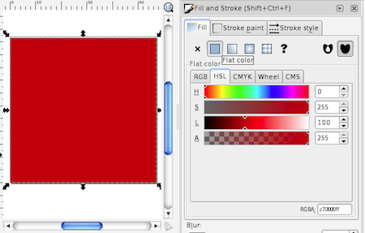Quick colors: you can also set solid fill and stroke colors on the selected object by left clicking (fill) or shift-left-clicking (stroke) a swatch at the bottom of the window.
We now need to edit the rectangle properties. Using the rectangle tool again, click the rectangle to select it (if it isn't already selected). In rectangle edit mode, a toolbar will appear at the top of the window labelled "Change" with coordinates "W", "H", "Rx" and "Ry". Set the "W" and "H" to 57 — this will make the rectangle exactly 57 pixels wide and high (if the rectangle auto-locked to the edges of the document, these values may already be set). Set the "Rx" and "Ry" to 10 — this will set the corner radii to 10 (a round rect).
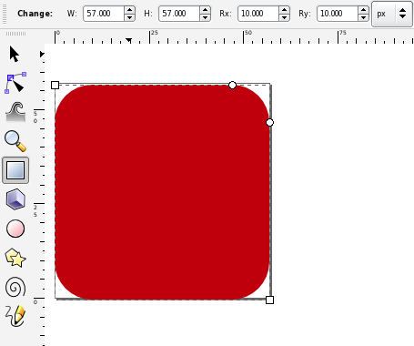Numerical accuracy: I'm going to quote a lot of coordinates and color values in this post but this is only so I can communicate what I'm doing. Most of the time, you do not need to be pixel accurate and can do things more approximately if you prefer.
Using the selection tool (the first tool in the Tool Area) select the rectangle. The object's "X" and "Y" coordinates will appear in the toolbar at the top. Set these to zero. The rectangle is now exactly the size of the document with round corners.
The gloss round rectangle
Copy the red round rectangle object (select it and press Control-C) and paste it (Control-V) somewhere else (when pasted, the object will be centered where the mouse is, so place the mouse over a different part of the document).
Copy and Paste bug: if the Copy and Paste fails (you get a bitmap instead of a proper editable object or nothing seems to happen), then you may be seeing a bug in Inkscape due to recent X11 changes. To work around this bug, go to the X11 preferences and on the Pasteboard tab, disable "Update Pasteboard when CLIPBOARD changes". Alternatively, you can use "Edit"→"Duplicate" to duplicate without copying.
With the copy selected, go to the Fill tab of the Fill and Stroke palette. Set a radial fill for the object (4th icon from the left at the top). If you've set the red color, then the radial gradient will initially look like a red dot fading outwards.
Click the "Edit" button in the Fill tab to edit the gradient. In the "Gradient Editor" that appears, the popup menu at the top will contain two items (the opaque red color and the fully transparent red color). Hit the "Add Stop" button twice to add two extra items in the gradient.
Edit the topmost item in the list of colors (the opaque red color) and set it to white with an alpha value of 86. Set the second item to white with an alpha of 75. Set the third to black with an alpha of 60. Set the final item to white aith an alpha of 0.
You also need to set the offset of the two middle colors. The black color should have an offset of 0.63. The white color should have an offset of 0.62.
This round rectangle should now look like a faint gray donut. Select it and set its "X" and "Y" coordinates to (0,0) (so that it perfectly overlaps the original red round rectangle).
With the faint gray donut selected, choose the Gradient Tool (second last in the Tool Area — if your vertical screen resolution isn't very high, you may need to select the Gradient Tool from the popup menu at the bottom of the Tool Area). An "L" shape of control points should appear over the donut.
Drag the control point that appears in the middle of the donut to the middle of the top edge of the round rect (it should lock onto the point with the text "Handle to bounding box").
Drag the round control point at the end of the horizontal arm of the "L" to X=-50. You can see the "X" value of the cursor at the bottom right of the window. Hold down the "Control" key while doing this to ensure that the "Y" value remains the same. Similarly, drag the round control point at the end of the vertical arm to Y=12.
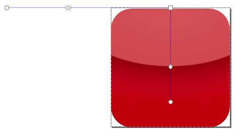On the Stroke tab of the Fill and Stroke palette, set a linear gradient stroke (third icon from the left at the top) for the gloss object. On the Stroke Style tab, set the line width to 1.0 px.
On the Stroke tab, edit the gradient. Set the start color to white and the end color to RGBA=(255,255,255,0). Using the Gradient Tool, select the gloss object. There should now be an extra set of control points in a horizontal line across the middle of the object corresponding to the stroke's gradient. Drag the start point of this line (square control point) to the top right corner of the object and the end point of the line (circular control point) to a position three quarters the way up the right-hand side of the object.
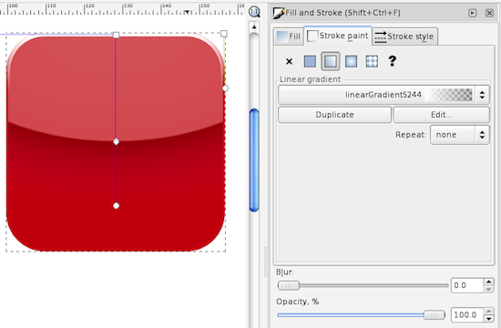Since the stroke added to the gloss object changed the size of the object, you will need to re-set the size of the gloss object to 57x57 at X,Y=(0,0).
You should now have a glossy red round rectangle in the style of an iPhone icon. If you know what you're doing in Inkscape, you can move these objects to another layer and hide them now however, it's probably easiest just to save this document and copy these objects when they are needed later.
The first iPhone icon
Blue-green background
Create a 57 by 57 rectangle at X,Y=(0,0) again, using the same approach as the red rectangle from the previous section but leave the corners square (you may need to explicitly set Rx and Ry to zero since it may remember the radius from before).
Set the fill of this rectangle to a linear gradient (third icon from the left at the top of the Fill tab in the Fill and Stroke palette). Edit the gradient and set the start point to RGBA=(15,112,126,255) and the end point to RGBA=(0,0,53,255).
Using the Gradient Tool from the Tool Area, select the rectangle and drag the gradient starting point (the square control point) to the center of the bottom edge of the rectangle. Drag the gradient end point (the round control point) to the center of the top edge of the rectangle.
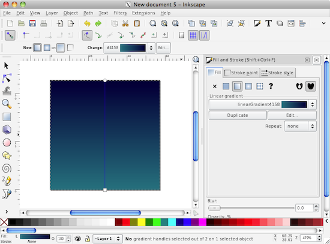Gradient colors: almost every gradient you use should involve a hue shift. When you want an actual 3D or lighting effect, you can also apply a luminance shift. The gradient here shifts from blue into the green direction as it lightens (a common choice). The other most common gradient would probably be from a darker red or orange towards a lighter yellowy orange. Hues on the green side of yellow or purple hues are rarely ever used.
Starburst object
Now, using the Stars and Polygons tool from the Tool Area (8th from the top) and drag out a shape (it will probably appear as a 5 point star — if it isn't a star, click the star icon in the top toolbar). With the Stars and Polygons tool and the object still selected, you should be able to edit the properties of the star. Set the number of corners to 350, the spoke ratio to 0.3 and the Randomized property to 0.015. Choose the Select and Transform tool (first tool in the Tool Area) and select the star. You can now set the width and height both to 87 and the X,Y to (-15,-15).
In the Fill and Stoke palette, set the opacity of the star to 50%.
Then, set a radial fill on the star from a start color of RGBA=(255,255,255,0) to an end color of RGBA=(0,235,255,255). This radial gradient fades out in the middle which will help the checkbox stand out from the background more.
A blur effect on the starburst
With the star object still selected, select the menu item "Filters"→"ABCs"→"Simple Blur". Then select the "Filters"→"Filter Editor..." menu item. This will display the Filter Editor palette.
Space limitations: If the Fill and Stroke Palette is still showing when the Filter Editor appears, you'll notice that they don't fit well together down the right margin. I recommend you either close the Fill and Stroke Editor or drag the Filter Editor off into its own window.
There should be one filter listed in the list of filters — this is the filter you just created. When you select the filter in the list, the Effect "Gaussian Blur" will appear in the Effect column at the right. Select the Gaussian Blur and the "Effect Parameters" tab will appear at the bottom. Set the "Standard Deviation" to 0.25.
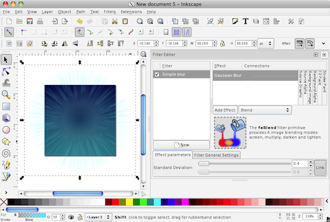You can also apply "Blur" using the Fill and Stroke palette. The blur radius at the bottom of this palette is 2.74 times the Standard Deviation applied here (no, I'm not really sure why the difference is 2.74 times).
The checkbox and checkmark objects
Now create a 29x29 round rectangle with corner radius 4 at X,Y=(14,14). This is the checkbox. This time, set no fill (the "X" icon on the Fill tab of the Fill and Stroke palette) and set a plain stroke (second icon from the left at the top of the Stroke tab) with a white color. On the "Stroke Style" tab, set the width to 3.0 "px". While here, set the "Cap" to round. It won't matter as much for this object, but we're just about to draw a line and we want it to have round endcaps.
Select the Bezier Line tool (11th icon down in the Tool Area). Click the mouse and release to create points at X,Y = (19.5,30), (28.5,20) and (47,48). Press the return key when done to finish the path. This is the checkmark. Now select the Node Tool (second icon from the top of the Tool Area) and select the checkmark. Click and hold the mouse in the middle of each line segment and drag up slightly to give the lines a slight curve. You can use the control points to tweak the effect if you're not happy.
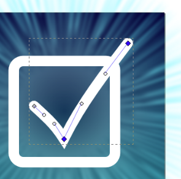Bevel effect and shadow
Select the checkmark and the checkbox. From the Filters menu select "Bevels"→"Ridged Border". Then from the Filters menu select "Shadows and Glows"→"Drop Shadow", set the blur to 2.0, the opacity to 35%, the offset to (3,3), hit the "Apply" button and close the Drop shadow dialog.
Speed tip: when zoomed in on objects using effects, the rendering can get slow. To disable effects or to drop entirely into wireframe mode, choose "No Filters" or "Outline" from the "View"→"Display Mode" menu or press Control-Keypad5. The "Ridged border" effect is especially slow in the current version of Inkscape — I recommend zooming out before you apply it and turning effects off before you zoom in close.
If you want to fully integrate the checkmark and the checkbox, you can convert the checkbox object to a path, the checkmark stroke to a path and then create a union of the two. I'll leave that to you if you're interested.
Apply the gloss effect and round corners
Select the green gradient background, the starburst, the checkbox and the checkmark and group them all together (Control-G or menu "Object"→"Group"). This will let you select them all in one go (ungroup with Control-Shift-G or double-click the group to select objects within the group without ungrouping).
With the group selected, from the Edit menu select "Clone"→"Create Clone". This will create a copy that continues to update when the original updates. Move the clone to X,Y=(-115.7,-15.7) (this coordinate include extra padding of approximately 2.74 times the starburst's blur standard deviation of 0.25 which is the amount that a blur will expand an object's boundary).
Now we need the red glossy round rectangle. If you saved them in a different document, copy them into this document now. Select the red background and gloss (drag a rectangle around both using the Selection Tool) and set the X,Y coordinates of the two of them to (-100,0). This may make the two objects hidden behind the cloned group objects so press the "Home" key (or select Raise to Top from the Object menu).
Drag the gloss and the red rectangle off of the objects they are covering (it doesn't matter where you put them). Select the cloned group and the red round rectangle but not the gloss gradient. Undo the two object moves. This should leave the cloned objects and the red round rectangle selected but all of the objects on top of each other. From the Object menu, select "Clip"→"Set". This should clip the cloned group to the boundary of the red round rectangle, and make the red round rectangle disappear.
Clipping: when clipping in Inkscape, the topmost object is always used as the clipping boundary and all other selected objects are clipped to its boundary.
Export the bitmap
Congratulations, your iPhone icon is complete.
You can export the prerendered (cloned, glossed and rounded) version to a PNG by selecting the gloss gradient that's over the clipped shape and selecting "Export Bitmap" from the "File" menu. Make sure that "Selection" is highlighted in the window that appears and set the width and height of the exported image to whatever size you want. Use the Browse button to select a location then hit the export button.
If you want to send the non-prerendered version to Apple, then select the uncloned group and export from that. 57x57 for the application icon and 512x512 for the high resolution version in your App Store submission.
Resampling: You may get a better effect on the small icon if you export at a larger size and use another program (Preview, GIMP, etc) to scale it down. This may give better anti-aliasing performance — particularly if your resizing program uses Lanczos resampling.
If you'd like your icon as a PDF, SVG or a number of other vector graphics types, you can choose "Save As..." and save to the format of your choice.
Conclusion
You can download an Inkscape SVG file containing the final icon (122kb). Note: Safari and other programs will open SVG files but the effects (shadows, blurs, etc) will only appear if the SVG is opened in Inkscape.
{kind=link}
In the second part, I will go through the steps for other icons, showing different stylistic options and explaining more of the effects and graphical elements you can use to create your icons. I'll look closer at filter effects in Inkscape, creating more sophisticated line paths, using gradients in multiple directions to achieve softer effects and creating simple textures to fill blank areas.
Memory and thread-safe custom property methods